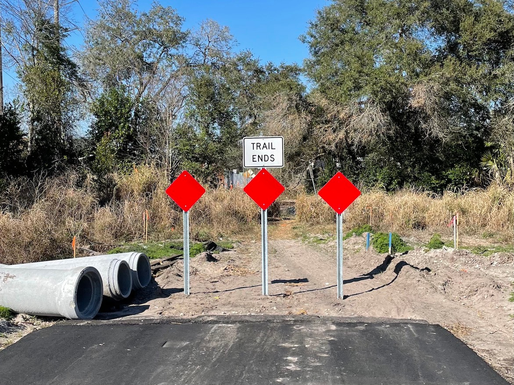
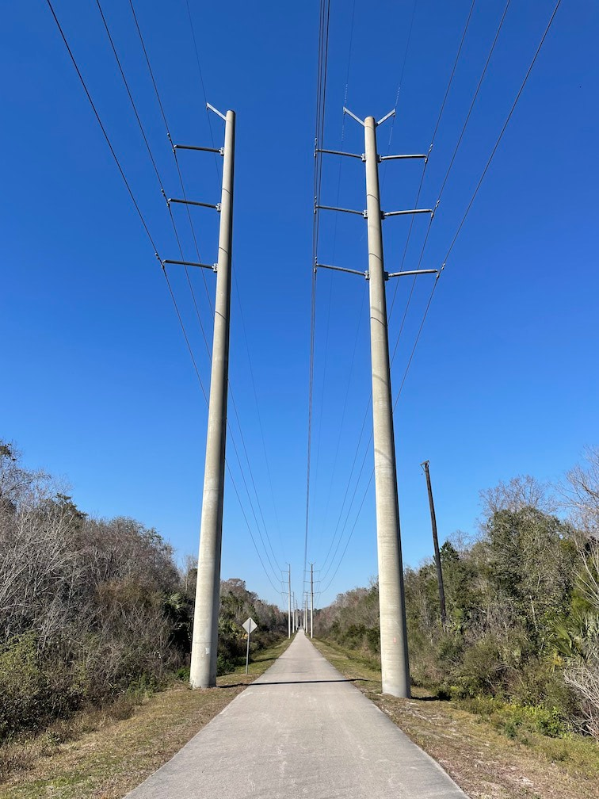

Those who don’t learn from history are doomed to repeat it. Back to Orlando today with no extra gear – no gloves, no granola bars, no emergency phone battery – to tackle two more trails of similar distance under similar weather conditions. Only today I figured I would start a little later to give the day time to warm up. And you know what, it worked out just fine.
The first leg was along Cady Way trail, starting out of Druid Lake park. It contained two sub-parks, one for dogs and one for mountain bikes. You know, as the druids would have done. After a brief but hectic detour along city roads, it was back to a dedicated paved path around ponds and parks. Now, I like to look at maps, but I will admit to maybe not being able to read them that well. I have no idea what was going on near the end of this trail. Signs on behalf of Orange County kept wishing me well, then welcoming me back, and so on. So either the county border line or trail itself must go in a sawtooth pattern, despite what my amateur reading of the maps says. This repeated until the final crossing into Seminole County for good, when the trails switched over too.
The Cross Seminole trail followed a rather egregious east-west out and back. To get around what? The map suggests a high school, a golf course, and a couple gated communities, but again, perhaps I’m reading it wrong. That’s not to say it wasn’t pleasant; the trail ran right through neighborhoods such that some houses along it had posts with address numbers or family names. It reminded me of the Filbert and Greenwich steps in San Francisco. Is that really your front door? Along a pedestrian walkway? How are your Amazon packages delivered?
Then I hit a section that was under construction. I mean, actively under construction. They were pouring cement right then and there. I kind of walked around the live construction zone and gingerly got back on the trail, half keeping an ear out for someone yelling at me, and half checking if the surface hadn’t set yet. The rest was pretty much complete, fresh new asphalt without paint or signage. Although it was kind of hard to discern the whole situation because this segment ran through a series of construction yards. Were these people working on the trail, or was this just, like, their office? A set of railroad tracks bisected the as-of-yet-unpainted asphalt and it seemed like no one had any idea what to do about that. The path abruptly ended, so I picked up my board, walked up the berm, crossed the tracks, walked down the berm, and resumed.
I kept wondering why today didn’t feel like an adventure, like I was blazing new ground or seeing new sights. And I realized that’s not the point of greenways like these. They’re meant to connect communities, that’s why they go through so many backyards. I’m just chasing the high of my first trip. The only stretch to feel alien and exciting was a long straightaway under rows of power lines. And I thought, that’s a great idea, why don’t we make more of these trails, there’s always open area under power lines because people… don’t… want to be there.
Back to reality, I reached where the Rails-to-Trails map said Cross Seminole would end, but it clearly kept going. So I rode for an extra mile, to where Google Maps’ bike view lost the trail. And yet, across the street from where I stopped, I could see another mile marker on the ground. Was it put there and later ripped up, implying the trail continued even farther, or was it waiting to be planted and set upright, once a future section was finished like what I had passed earlier? I decided I was done, so the trail must be too. Then when I got back and looked it up, Seminole County’s interactive map showed it indeed continuing on from there all the way out of the dang county. Into the great undefined beyond of the map. Someone teach me cartography.